स्कन्ध 4 · अध्याय 22
श्लोक १
मैत्रेय उवाच–
जनेषु प्रगृणत्स्वेवं पृथुं पृथुलविक्रमम् ।
तत्रोपजग्मुर्मुनयश्चत्वारः सूर्यवर्चसः।। १ ।।
जनेषु प्रगृणत्स्वेवं पृथुं पृथुलविक्रमम् ।
तत्रोपजग्मुर्मुनयश्चत्वारः सूर्यवर्चसः।। १ ।।
श्लोक २
तांस्तु सिद्धेश्वरान् राजा व्योम्नोऽवतरतोऽर्चिषा ।
लोकानपापान् कुर्वन्त्या सानुगोऽचष्ट लक्षितान्।। २ ।।
लोकानपापान् कुर्वन्त्या सानुगोऽचष्ट लक्षितान्।। २ ।।
श्लोक ३
तद्दर्शनोद्गतप्राणान् प्रत्यादित्सुरिवोत्थितः ।
ससदस्यानुगो वैन्य इन्द्रियेशो गुणानिव।। ३ ।।
ससदस्यानुगो वैन्य इन्द्रियेशो गुणानिव।। ३ ।।
श्लोक ४
गौरवाद्यन्त्रितः सभ्यः प्रश्रयानतकन्धरः ।
विधिवत् पूजयाञ्चक्रे गृहीतार्घ्यार्हणासनान्।। ४ ।।
विधिवत् पूजयाञ्चक्रे गृहीतार्घ्यार्हणासनान्।। ४ ।।
श्लोक ५
तत्पादशौचसलिलैर्मार्जितालकबन्धनः ।
तत्र शीलवतां वृत्तिमाचरन् मानयन्निव।। ५ ।।
तत्र शीलवतां वृत्तिमाचरन् मानयन्निव।। ५ ।।
श्लोक ६
हाटकासन आसीनान् स्वधिष्ण्येष्विव पावकान् ।
श्रद्धासंयमसम्पन्नः प्रीतः प्राह भवाग्रजान्।। ६ ।।
श्रद्धासंयमसम्पन्नः प्रीतः प्राह भवाग्रजान्।। ६ ।।
श्लोक ७
पृथुरुवाच –
अहो आचरितं कृष्णे मङ्गलं मङ्गलायनाः ।
यस्य वो दर्शनं ह्यासीद् दुर्दर्शानां कुयोगिनः।। ७ ।।
अहो आचरितं कृष्णे मङ्गलं मङ्गलायनाः ।
यस्य वो दर्शनं ह्यासीद् दुर्दर्शानां कुयोगिनः।। ७ ।।
श्लोक ८
किं तस्य दुर्लभतरमिहलोके परत्र च ।
यस्य विप्राः प्रसीदन्ति शिवो विष्णुश्च सानुगः।। ८ ।।
यस्य विप्राः प्रसीदन्ति शिवो विष्णुश्च सानुगः।। ८ ।।
श्लोक ९
नैव लक्षयते लोको लोकान् पर्यटतोऽपि यान् ।
यथा सर्वदृशं सर्व आत्मानं येऽस्य हेतवः।। ९ ।।
यथा सर्वदृशं सर्व आत्मानं येऽस्य हेतवः।। ९ ।।
भागवततात्पर्यनिर्णय
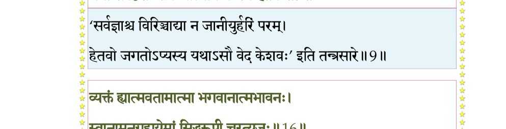
श्लोक १०
अधना अपि ते धन्याः साधवो गृहमेधिनः ।
यद्गृहा अर्हवर्याम्बुतृणभूमिसुवाग्धराः।। १० ।।
यद्गृहा अर्हवर्याम्बुतृणभूमिसुवाग्धराः।। १० ।।
श्लोक ११
व्यालालयद्रुमा ह्येते संसिद्धाखिलसंपदः ।
यद्गृहास्तीर्थपादीयपादतीर्थविवर्जिताः।। ११ ।।
यद्गृहास्तीर्थपादीयपादतीर्थविवर्जिताः।। ११ ।।
श्लोक १२
स्वागतं वो द्विजश्रेष्ठा यद् व्रतानि मुमुक्षवः ।
चरन्ति श्रद्धया धीरा बाला एव बृहन्ति वै।। १२ ।।
चरन्ति श्रद्धया धीरा बाला एव बृहन्ति वै।। १२ ।।
श्लोक १३
कच्चिन्नः कुशलं नाथा इन्द्रियार्थार्थवेदिनाम् ।
व्यसनावाप एतस्मिन् पतितानां स्वकर्मभिः।। १३ ।।
व्यसनावाप एतस्मिन् पतितानां स्वकर्मभिः।। १३ ।।
श्लोक १४
भवत्सु कुशलप्रश्न आत्मारामेषु नेष्यते ।
कुशलाकुशला यत्र न सन्ति मतिवृत्तयः।। १४ ।।
कुशलाकुशला यत्र न सन्ति मतिवृत्तयः।। १४ ।।
श्लोक १५
तदहं कृतविश्रम्भः सुहृदोऽत्र तपस्विनाम् ।
संपृच्छे भव एतस्मिन् क्षेमः केनाञ्जसा भवेत्।। १५ ।।
संपृच्छे भव एतस्मिन् क्षेमः केनाञ्जसा भवेत्।। १५ ।।
श्लोक १६
व्यक्तं ह्यात्मवतामात्मा भगवानात्मभावनः ।
स्वानामनुग्रहायेमां सिद्धरूपी चरत्यजः।। १६ ।।
स्वानामनुग्रहायेमां सिद्धरूपी चरत्यजः।। १६ ।।
भागवततात्पर्यनिर्णय
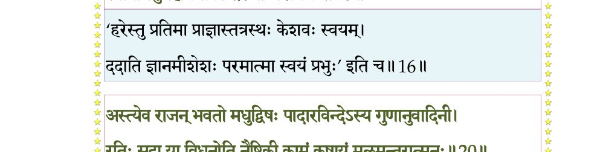
श्लोक १७
मैत्रेय उवाच –
पृथोस्तत्सूक्तमाकर्ण्य सारं सुष्ठु मितं मधु ।
स्मयमान इव प्रीत्या कुमारः प्रत्युवाच ह।। १७ ।।
पृथोस्तत्सूक्तमाकर्ण्य सारं सुष्ठु मितं मधु ।
स्मयमान इव प्रीत्या कुमारः प्रत्युवाच ह।। १७ ।।
श्लोक १८
सनत्कुमार उवाच–
साधु पुष्टं महाराज सर्वभूतहितात्मना ।
भवता विदुषा चापि साधूनां गतिरीदृशी।। १८ ।।
साधु पुष्टं महाराज सर्वभूतहितात्मना ।
भवता विदुषा चापि साधूनां गतिरीदृशी।। १८ ।।
श्लोक १९
सङ्गमः खलु साधूनामुभयेषां सुसम्मतः ।
सत्सम्भाषणसम्प्रश्नः सर्वेषां वितनोति शम्।। १९ ।।
सत्सम्भाषणसम्प्रश्नः सर्वेषां वितनोति शम्।। १९ ।।
श्लोक २१
अस्त्येव राजन् भवतो मधुद्विषः पादारविन्देऽस्य गुणानुवादने ।
रतिः सदा या विधुनोति नैष्ठिकी कामं कषायं मलमन्तरात्मनः।।
शास्त्रेष्वियानेव सुनिश्चितो नृणां क्षेमस्य सम्यग्विमृशेषु हेतुः ।
असङ्ग आत्मव्यतिरिक्तवस्तुनि दृढा रतिर्ब्रह्मणि निर्गुणे च या।।२१।।
रतिः सदा या विधुनोति नैष्ठिकी कामं कषायं मलमन्तरात्मनः।।
शास्त्रेष्वियानेव सुनिश्चितो नृणां क्षेमस्य सम्यग्विमृशेषु हेतुः ।
असङ्ग आत्मव्यतिरिक्तवस्तुनि दृढा रतिर्ब्रह्मणि निर्गुणे च या।।२१।।
भागवततात्पर्यनिर्णय
श्लोक २२
तच्छ्रद्धया भगवद्धर्मचर्यया जिज्ञासयाऽऽध्यात्मिकयोगनिष्ठया ।
योगेश्वरोपासनया च नित्यं पुण्यश्रवःकथया पुण्यया च।। २२ ।।
योगेश्वरोपासनया च नित्यं पुण्यश्रवःकथया पुण्यया च।। २२ ।।
श्लोक २३
अर्थेन्द्रियारामगुणेष्वतृष्णया तत्सम्मतानामपरिग्रहेण च ।
विविक्तरुच्या परितोष आत्मन् विना हरेर्गुणपीयूषपानात्।। २३ ।।
विविक्तरुच्या परितोष आत्मन् विना हरेर्गुणपीयूषपानात्।। २३ ।।
श्लोक २४
अहिंसया पारमहंस्यचर्यया स्मृत्या मुकुन्दाचरिताग्य्रसीधुना ।
यमैरकामैर्नियमैरभिध्यया निरीहया द्वन्द्वतितिक्षया च।। २४ ।।
यमैरकामैर्नियमैरभिध्यया निरीहया द्वन्द्वतितिक्षया च।। २४ ।।
श्लोक २६
हरेर्मुहुस्तत्परकर्णपूरया गुणाभिधानेन विजृम्भमाणया ।
भक्त्या ह्यसङ्गः सदसत्परात्मनि स्यान्निर्गुणे ब्रह्मणि चाञ्जसा रतिः।।
यदा रतिर्ब्रह्मणि नैष्ठिकी पुमानाचार्यवान् ज्ञानविरागरंहसा ।
दहत्यबीजं हृदयं जीवकोशं पञ्चात्मकं योनिमिवोत्थितोऽग्निः।।२६।।
भक्त्या ह्यसङ्गः सदसत्परात्मनि स्यान्निर्गुणे ब्रह्मणि चाञ्जसा रतिः।।
यदा रतिर्ब्रह्मणि नैष्ठिकी पुमानाचार्यवान् ज्ञानविरागरंहसा ।
दहत्यबीजं हृदयं जीवकोशं पञ्चात्मकं योनिमिवोत्थितोऽग्निः।।२६।।
भागवततात्पर्यनिर्णय
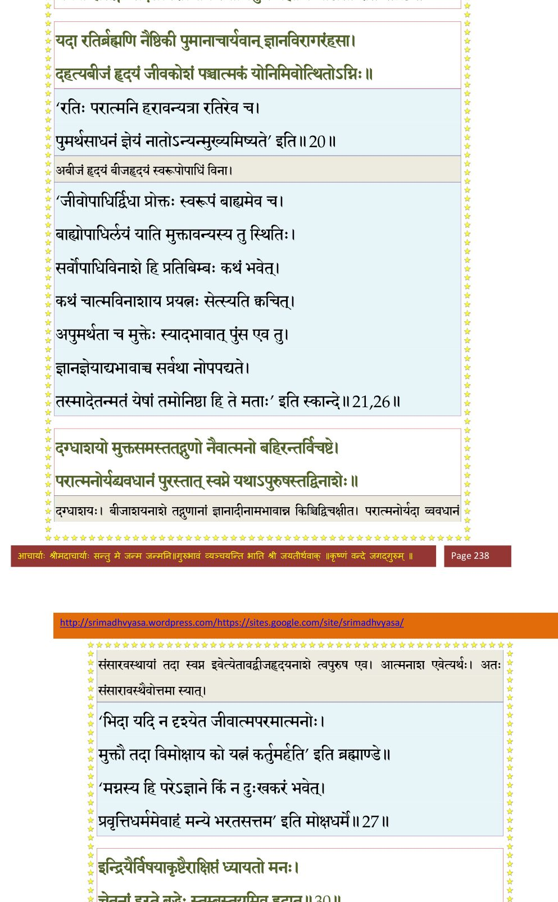
श्लोक २७
दग्धाशयो मुक्तसमस्ततद्गुणो नैवात्मनो बहिरन्तर्विचष्टे ।
परात्मनोर्यद् व्यवधानं पुरस्तात् स्वप्ने यथाऽपुरुषस्तद्विनाशे।।२७।।
परात्मनोर्यद् व्यवधानं पुरस्तात् स्वप्ने यथाऽपुरुषस्तद्विनाशे।।२७।।
श्लोक २८
आत्मानमिन्द्रियार्थं च परं यदुभयोरपि ।
सत्याशय उपाधौ वै पुमान् पश्यति नान्यदा।। २८ ।।
सत्याशय उपाधौ वै पुमान् पश्यति नान्यदा।। २८ ।।
श्लोक २९
निमित्ते सति सर्वत्र जलादावपि पूरुषः ।
आत्मनश्च परस्यापि भिदां पश्यति नान्यदा।। २९ ।।
आत्मनश्च परस्यापि भिदां पश्यति नान्यदा।। २९ ।।
श्लोक ३०
इन्द्रियैर्विषयाकृष्टैराक्षिप्तं ध्यायतो मनः ।
चेतनां हरते बुद्धेः स्तुम्बस्तोयमिव ह्रदात्।। ३० ।।
चेतनां हरते बुद्धेः स्तुम्बस्तोयमिव ह्रदात्।। ३० ।।
भागवततात्पर्यनिर्णय
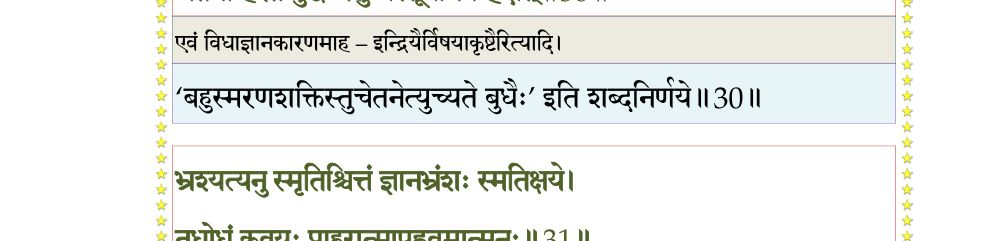
श्लोक ३१
भ्रश्यत्यनुस्मृतिश्चित्तं ज्ञानभ्रंशः स्मृतिक्षये ।
तद्रोधं कवयः प्राहुरात्मापह्नवमात्मनः।। ३१ ।।
तद्रोधं कवयः प्राहुरात्मापह्नवमात्मनः।। ३१ ।।
भागवततात्पर्यनिर्णय
श्लोक ३२
नातः परतरो लोके पुंसः स्वार्थव्यतिक्रमः ।
यद्यस्त्यन्यस्य प्रेयस्त्वमात्मनः स्वव्यतिक्रमात्।। ३२ ।।
यद्यस्त्यन्यस्य प्रेयस्त्वमात्मनः स्वव्यतिक्रमात्।। ३२ ।।
भागवततात्पर्यनिर्णय
श्लोक ३३
अर्थेन्द्रियार्थाभिध्यानं सर्वार्थापह्नवो नृणाम् ।
भ्रंशितो ज्ञानविज्ञानाद् येनाविशति मुग्धताम्।। ३३ ।।
भ्रंशितो ज्ञानविज्ञानाद् येनाविशति मुग्धताम्।। ३३ ।।
भागवततात्पर्यनिर्णय
श्लोक ३४
न कुर्यात् कर्हिचित् सङ्गं तमस्तीव्रं तितीर्षुणा ।
धर्मार्थकाममोक्षाणां यदत्यन्तविघातकम्।। ३४ ।।
धर्मार्थकाममोक्षाणां यदत्यन्तविघातकम्।। ३४ ।।
भागवततात्पर्यनिर्णय
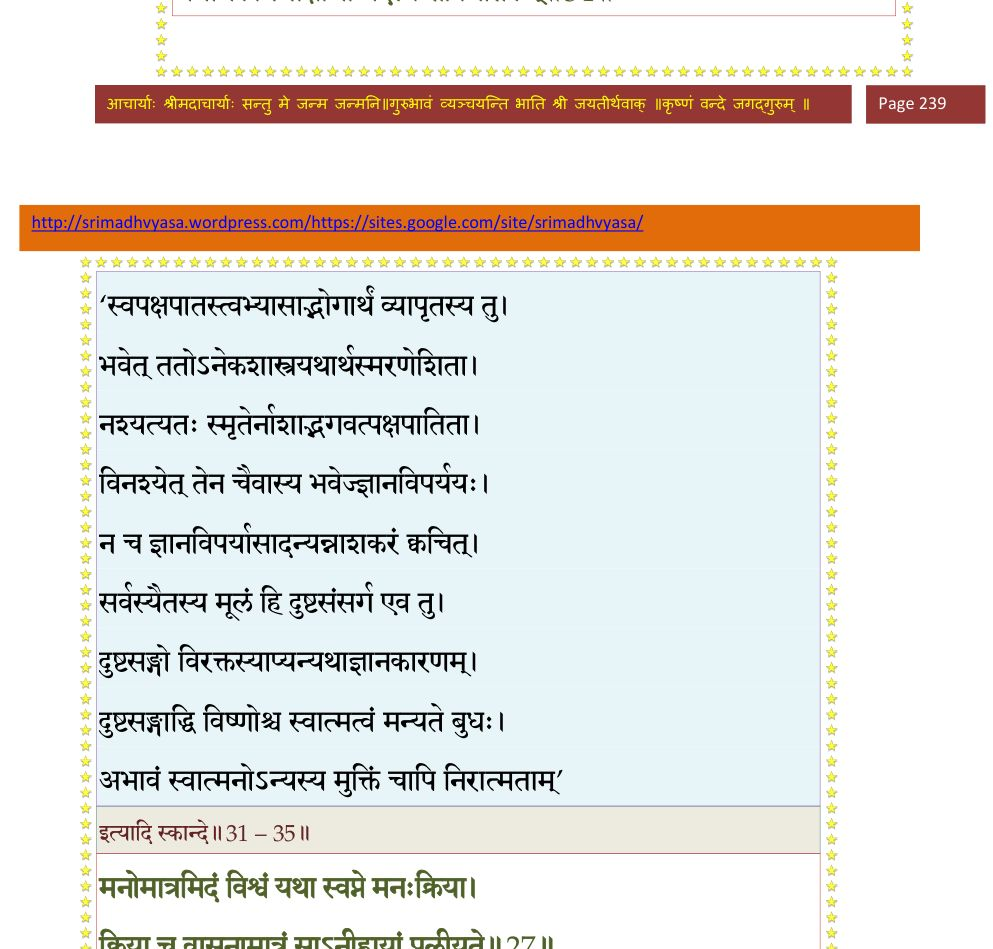
श्लोक ३५
तत्रापि मोक्ष एवार्थ आत्यन्तिकतयेष्यते ।
त्रैवर्ग्यार्थो यतो नित्यं कृतान्तभयसंयुतः।। ३५ ।।
त्रैवर्ग्यार्थो यतो नित्यं कृतान्तभयसंयुतः।। ३५ ।।
श्लोक ३६
परावरे च ये भावा गुणव्यतिकरादनु ।
न तेषां विद्यते क्षेम ईशविध्वंसिताशिषाम्।। ३६ ।।
न तेषां विद्यते क्षेम ईशविध्वंसिताशिषाम्।। ३६ ।।
श्लोक ३७
मनोमात्रमिदं विश्वं यथा स्वप्ने मनः क्रिया ।
क्रिया च वासनामात्रं साऽनीहायां प्रलीयते।। ३७ ।।
क्रिया च वासनामात्रं साऽनीहायां प्रलीयते।। ३७ ।।
भागवततात्पर्यनिर्णय
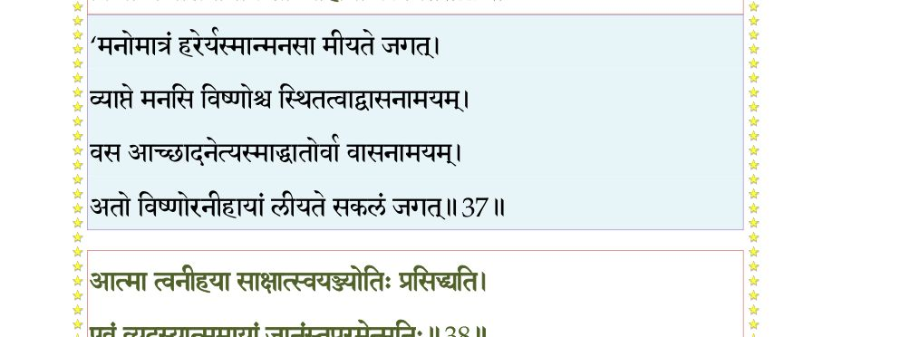
श्लोक ३८
आत्मा त्वनीहया साक्षात् स्वयंज्योतिः प्रसिद्ध्यति ।
एवं व्युदस्यात्ममायां भिदामुपरमेन्मुनिः।। ३८ ।।
एवं व्युदस्यात्ममायां भिदामुपरमेन्मुनिः।। ३८ ।।
भागवततात्पर्यनिर्णय
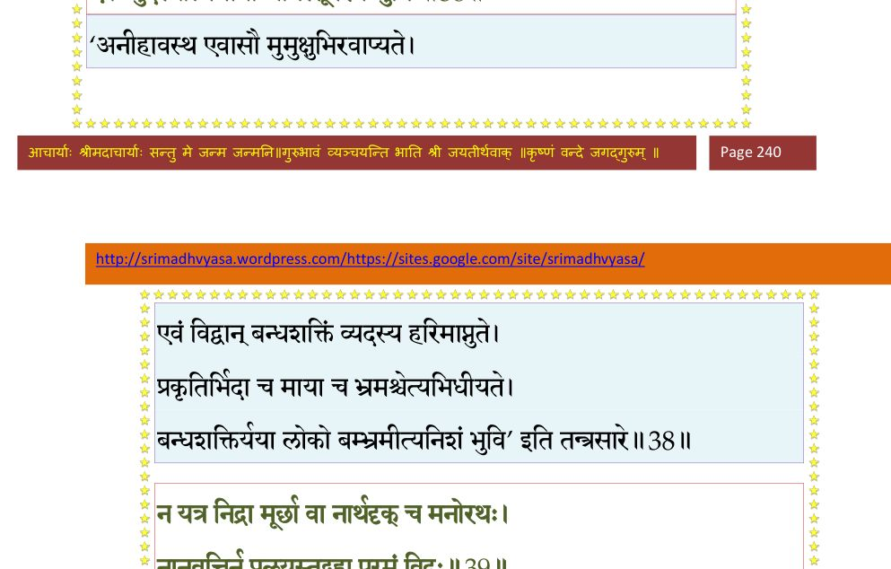
श्लोक ३९
न यत्र निद्रा मूर्च्छा वा नार्थदृक् च मनोरथः ।
नानुवृत्तिर्न प्रलयस्तद् ब्रह्म विजितात्मनः।। ३९ ।।
नानुवृत्तिर्न प्रलयस्तद् ब्रह्म विजितात्मनः।। ३९ ।।
भागवततात्पर्यनिर्णय
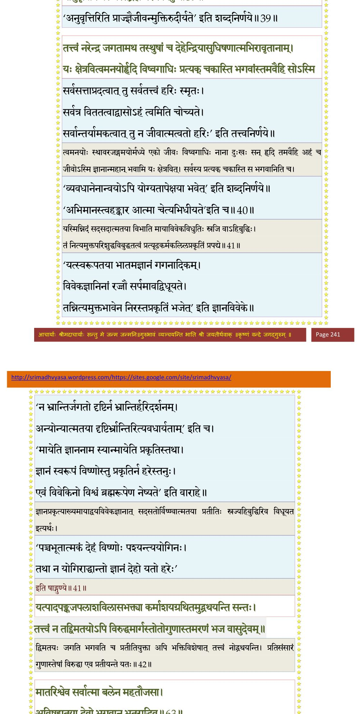
श्लोक ४०
तत्त्वं नरेन्द्र जगतामथ तस्थुषां च
देहेन्द्रियासुधिषणात्मभिरावृतानाम् ।
यः क्षेत्रवित् त्वमनयोर्हृदि विष्वगाधिः
प्रत्यक् चकास्ति भगवांस्तमवैहि सोऽस्ति।। ४० ।।
देहेन्द्रियासुधिषणात्मभिरावृतानाम् ।
यः क्षेत्रवित् त्वमनयोर्हृदि विष्वगाधिः
प्रत्यक् चकास्ति भगवांस्तमवैहि सोऽस्ति।। ४० ।।
श्लोक ४१
यस्मिन्निदं सदसदात्मतया विभाति मायाविवेकविधुतिः स्रजिवाहिबुद्धिः ।
तं नित्यमुक्तपरिशुद्धविबुद्धतत्त्वं प्रत्यूढकर्मकलिलप्रकृतिं प्रपद्ये।।४१।।
तं नित्यमुक्तपरिशुद्धविबुद्धतत्त्वं प्रत्यूढकर्मकलिलप्रकृतिं प्रपद्ये।।४१।।
श्लोक ४४
यत्पादपङ्कजपरागविलासभक्त्या कर्माशयग्रथितमुद्ग्रथयन्ति सन्तः ।
तत्त्वं न तद् द्विमतयोऽपि विरुद्धमार्गस्रोतोगुणास्तमरणं भज वासुदेवम् ।।
कृच्छ्रो महानिह भवार्णवमप्लवेशाः षड्वर्गनक्रमसुखेन तितीर्षयन्ति ।
तत् त्वं हरेर्भगवतो भजनीयमङ्घ्रिं कृत्वोडुपं व्यसनमुत्तर दुस्तरार्णम् ।।
मैत्रेय उवाच–
स एवं ब्रह्मपुत्रेण कुमारेणात्ममेधसा ।
दर्शितात्मगतिः सम्यक् प्रशस्योवाच तं नृपः।। ४४ ।।
तत्त्वं न तद् द्विमतयोऽपि विरुद्धमार्गस्रोतोगुणास्तमरणं भज वासुदेवम् ।।
कृच्छ्रो महानिह भवार्णवमप्लवेशाः षड्वर्गनक्रमसुखेन तितीर्षयन्ति ।
तत् त्वं हरेर्भगवतो भजनीयमङ्घ्रिं कृत्वोडुपं व्यसनमुत्तर दुस्तरार्णम् ।।
मैत्रेय उवाच–
स एवं ब्रह्मपुत्रेण कुमारेणात्ममेधसा ।
दर्शितात्मगतिः सम्यक् प्रशस्योवाच तं नृपः।। ४४ ।।
श्लोक ४५
पृथुरुवाच –
कृतो मेऽनुग्रहः पूर्वं हरिणाऽऽर्तानुकम्पिना ।
तमापादयितुं ब्रह्मन् भगवन् यूयमागताः।। ४५ ।।
कृतो मेऽनुग्रहः पूर्वं हरिणाऽऽर्तानुकम्पिना ।
तमापादयितुं ब्रह्मन् भगवन् यूयमागताः।। ४५ ।।
श्लोक ४६
निष्पादितं च कार्त्स्न्येन भगवद्भिर्घृणालुभिः ।
साधुदत्तं हि सर्वं मे आत्मना सह किं ददे।। ४६ ।।
साधुदत्तं हि सर्वं मे आत्मना सह किं ददे।। ४६ ।।
श्लोक ४७
प्राणा दाराः सुता ब्रह्मन् गृहाश्च सपरिग्रहाः ।
रायो मही बलं कोश इति सर्वं निवेदितम्।। ४७ ।।
रायो मही बलं कोश इति सर्वं निवेदितम्।। ४७ ।।
श्लोक ४८
सेनापत्यं च राज्यं च दण्डनेतृत्वमेव च ।
सर्वलोकाधिपत्यं च वेदशास्त्रविदर्हति।। ४८ ।।
सर्वलोकाधिपत्यं च वेदशास्त्रविदर्हति।। ४८ ।।
श्लोक ४९
स्वंय(स्व)मेव ब्राह्मणो भुङ्क्ते स्वं वस्ते स्वं ददाति च ।
तस्यैवानुग्रहेणान्नं भुञ्जते क्षत्रियादयः।। ४९ ।।
तस्यैवानुग्रहेणान्नं भुञ्जते क्षत्रियादयः।। ४९ ।।
श्लोक ५०
यैरीदृशी भगवतो गतिरात्मवाद
एकान्ततो निगमिभिः प्रतिपादिता नः ।
तुष्यन्त्वदभ्रकरुणाः स्वकृतेन नित्यं
को नाम तत् प्रतिकरोति विनोदपात्रम्।। ५० ।।
एकान्ततो निगमिभिः प्रतिपादिता नः ।
तुष्यन्त्वदभ्रकरुणाः स्वकृतेन नित्यं
को नाम तत् प्रतिकरोति विनोदपात्रम्।। ५० ।।
श्लोक ५१
मैत्रेय उवाच –
त आत्मयोगपतय आदिराजेन पूजिताः ।
शीलं तदीयं शंसन्तः खेऽभूवन् मिषतां नृणाम्।। ५१ ।।
त आत्मयोगपतय आदिराजेन पूजिताः ।
शीलं तदीयं शंसन्तः खेऽभूवन् मिषतां नृणाम्।। ५१ ।।
श्लोक ५२
वैन्यस्तु धुर्यो महतां संस्थित्याऽध्यात्मशिक्षया ।
आप्तकाममिवात्मानं मेन आत्मन्यवस्थितः।। ५२ ।।
आप्तकाममिवात्मानं मेन आत्मन्यवस्थितः।। ५२ ।।
श्लोक ५३
कर्माणि च यथाकालं यथादेशं यथाबलम् ।
यथोचितं यथावित्तमकरोद् ब्रह्मसात्कृतम्।। ५३ ।।
यथोचितं यथावित्तमकरोद् ब्रह्मसात्कृतम्।। ५३ ।।
श्लोक ५४
फलं ब्रह्मणि विन्यस्य निर्विषङ्गः समाहितः ।
कर्माध्यक्षं च मन्वान आत्मानं प्रकृतेः परम्।। ५४ ।।
कर्माध्यक्षं च मन्वान आत्मानं प्रकृतेः परम्।। ५४ ।।
श्लोक ५५
गृहेषु वर्तमानोऽपि स साम्राज्यश्रियाऽन्वितः ।
नासज्जतेन्द्रियार्थेषु निरहम्मतिरर्कवत्।। ५५ ।।
नासज्जतेन्द्रियार्थेषु निरहम्मतिरर्कवत्।। ५५ ।।
श्लोक ५६
एवमध्यात्मयोगेन कर्माण्यनुसमाचरन् ।
पुत्रानुत्पादयामास पञ्चार्चिष्यात्मसम्मतान्।। ५६ ।।
पुत्रानुत्पादयामास पञ्चार्चिष्यात्मसम्मतान्।। ५६ ।।
श्लोक ५७
विजिताश्वं धूमकेशं हर्यक्षं द्रविणं वृकम् ।
सर्वेषां लोकपालानां दधारैकः पृथग् गुणान्।। ५७ ।।
सर्वेषां लोकपालानां दधारैकः पृथग् गुणान्।। ५७ ।।
श्लोक ५८
गोपीथाय जगत्सृष्टेः काले स्वे स्वेऽच्युतात्मकः ।
मनोवाङ्मूर्तिभिः सौम्यैर्गुणैः संरञ्जयन् प्रजाः।। ५८ ।।
मनोवाङ्मूर्तिभिः सौम्यैर्गुणैः संरञ्जयन् प्रजाः।। ५८ ।।
श्लोक ५९
राजेत्यधान्नामधेयं सोमराज इवापरः ।
सूर्यवद् विसृजन् गृह्णन् प्रतपंश्च भुवो वसु।। ५९ ।।
सूर्यवद् विसृजन् गृह्णन् प्रतपंश्च भुवो वसु।। ५९ ।।
श्लोक ६०
दुर्धर्षस्तेजसेवाग्निर्महेन्द्र इव दुर्जयः ।
तितिक्षया धरित्रीव द्यौरिवाभीष्टदो नृणाम्।। ६० ।।
तितिक्षया धरित्रीव द्यौरिवाभीष्टदो नृणाम्।। ६० ।।
श्लोक ६१
वर्षति स्म यथाकामं पर्जन्य इव तर्पयन् ।
समुद्र इव दुर्बोधः सत्येनाचलराडिव।। ६१ ।।
समुद्र इव दुर्बोधः सत्येनाचलराडिव।। ६१ ।।
श्लोक ६२
धर्मराडिव शिक्षायामाश्चर्ये हिमवानिव ।
कुबेर इव कोशाढ्यो गुप्तार्थो वरुणो यथा।। ६२ ।।
कुबेर इव कोशाढ्यो गुप्तार्थो वरुणो यथा।। ६२ ।।
श्लोक ६३
मातरिश्वेव सर्वात्मा बलेन महतौजसा ।
अविषह्यतया देवो भगवान् भूतराडिव।। ६३ ।।
अविषह्यतया देवो भगवान् भूतराडिव।। ६३ ।।
भागवततात्पर्यनिर्णय
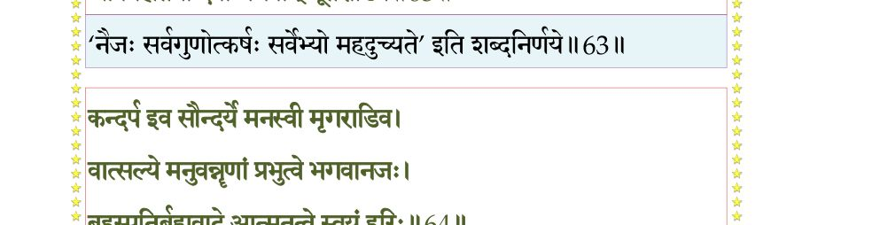
श्लोक ६४
कन्दर्प इव सौन्दर्ये मनस्वी मृगराडिव ।
वात्सल्ये मनुवन्नॄणां प्रभुत्वे भगवानजः।। ६४ ।।
वात्सल्ये मनुवन्नॄणां प्रभुत्वे भगवानजः।। ६४ ।।
भागवततात्पर्यनिर्णय
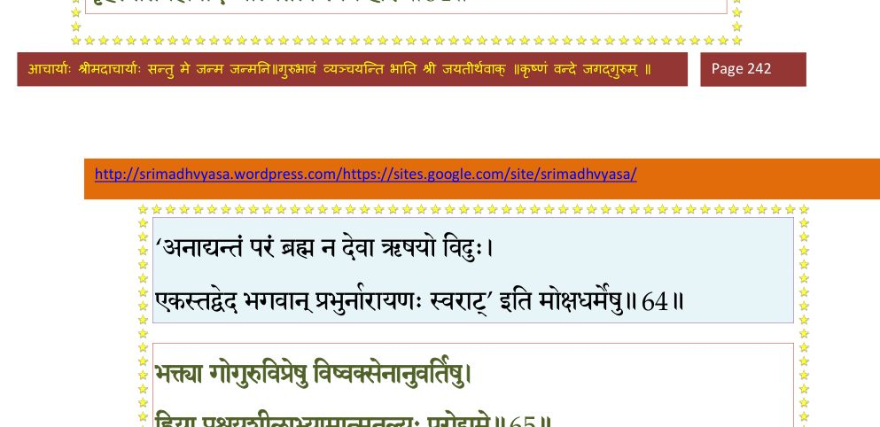
श्लोक ६५
बृहस्पतिर्ब्रह्मवादे आत्मतत्त्वे स्वयं हरिः ।
भक्त्या गोगुरुविप्रेषु विष्वक्सेनानुवर्तिषु।। ६५ ।।
भक्त्या गोगुरुविप्रेषु विष्वक्सेनानुवर्तिषु।। ६५ ।।
श्लोक ६६
ह्रिया प्रश्रयशीलाभ्यामात्मतुल्यपरोद्यमैः ।
कीर्त्योर्ध्वगीतया पुम्भिस्त्रैलोक्ये तत्र तत्र ह।। ६६ ।।
कीर्त्योर्ध्वगीतया पुम्भिस्त्रैलोक्ये तत्र तत्र ह।। ६६ ।।
भागवततात्पर्यनिर्णय
श्लोक ६७
प्रविष्टः कर्णरन्ध्रेषु स्त्रीणां रामः सतामिव।। ६७ ।।
भागवततात्पर्यनिर्णय
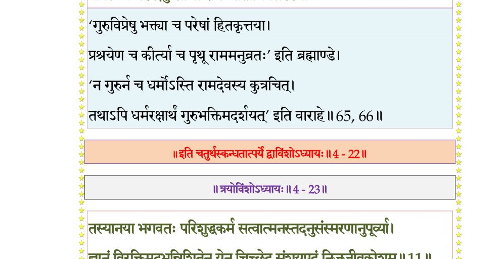
।। इति श्रीमद्भागवते चतुर्थस्कन्धे द्वाविंशोऽध्यायः ।।